Santé · 2015 · Suisse
Swiss Knowhow – Santé • Gesundheit 2015
Panorama national du système de santé suisse publié en juillet 2015 par Com Consulting SA. Responsables politiques et fédéraux (DSS tessinois, OFSP, SEFRI), faîtières (santésuisse, H+, FASMED, ARODEMS) et directeurs d'hôpitaux universitaires et cantonaux (USZ, HUG, CHUV, KSA, Inselspital, Spital Uster) y abordent coûts, pénurie de personnel, recherche et innovation. Le numéro réunit aussi de nombreux profils d'entreprises et d'institutions : biotech et pharma tessinoises, medtech, logistique hospitalière, centres de soins et départements universitaires, en quatre langues.
Sommaire · 36 articles

Il Ticino è in salute – Il nodo non è quanto si spende ma come si spende...
di Paolo Beltraminelli, Consigliere di Stato, direttore Dipartimento della sanità e della socialità
santésuisse – Interview mit Direktorin Verena Nold Rebetez
Bundesamt für Gesundheit – Interview mit Direktor Pascal Strupler
Staatssekretariat für Bildung, Forschung und Innovation SBFI
UniversitätsSpital Zürich – Im Gespräch mit Spitaldirektorin Rita Ziegler
H+ Die Spitäler der Schweiz – Interview mit Charles Favre, Präsident
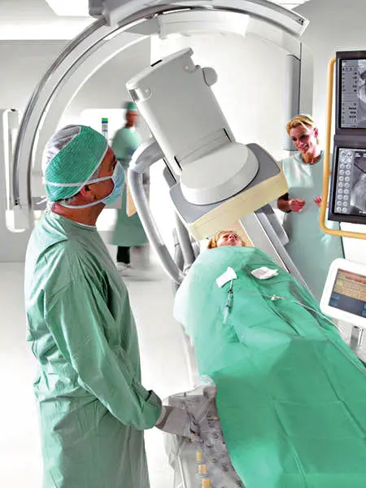
InterviewFASMED – Dachverband der Schweizerischen Handels- und Industrievereinigungen der Medizintechnik
Im Gespräch mit Urs Gasche, Präsident
Hôpitaux universitaires de Genève – La qualité et l'innovation, un engagement au quotidien
Interview de Bertrand Levrat, Directeur général des HUG
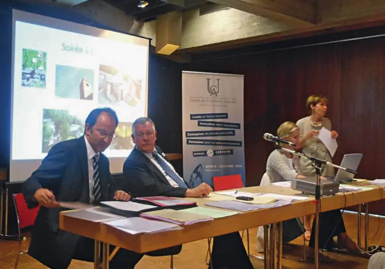
InterviewL'EMS, un élément incontournable du réseau de santé
Interview de Pierre Rochat, Président de l'ARODEMS, Directeur de la Fondation Beau-Site
Pour une médecine humaniste
Interview du Pr. Pierre-François Leyvraz, Directeur général du Centre hospitalier universitaire vaudois (CHUV)
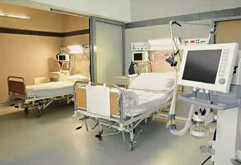
InterviewUn centre de compétences pour l'achat, l'approvisionnement et la logistique
Interview de Claude-Alain Rebetez, Directeur de la Centrale d'achats des établissements sanitaires société coopérative (CADES)
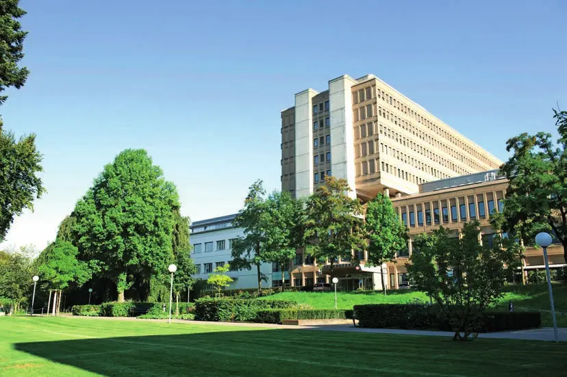
InterviewKantonsspital Aarau – Interview mit CEO Robert Rhiner
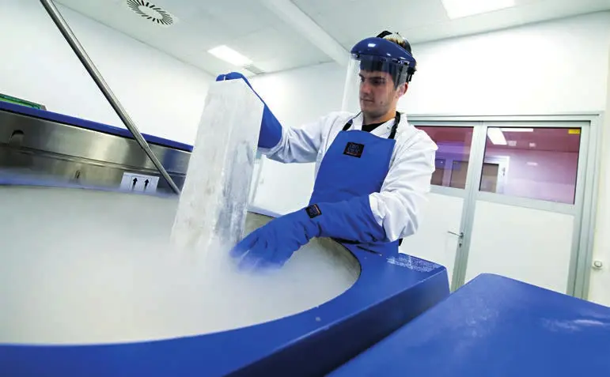
InterviewSSCB – Swiss Stem Cell Bank: tra conservazione e ricerca, un impegno a tutto campo sul fronte delle cellule staminali
Intervista a Patrizia Franconi, CEO (version anglaise incluse)
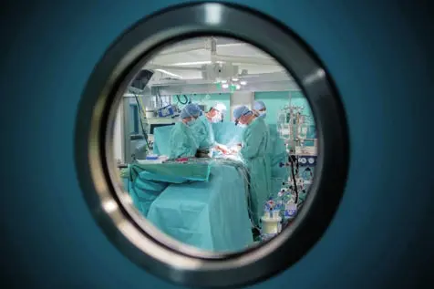
PublireportageForte impegno nella ricerca, eccellenza clinica e innovazione tecnologica: il Cardiocentro Ticino guarda avanti
Version anglaise incluse : Cardiocentro Ticino looks to the future
Lo Swiss Institute for Regenerative Medicine (SIRM) di Taverne
Dove la ricerca getta le basi per la medicina del futuro e per lo sviluppo culturale ed economico del territorio (version anglaise incluse)
 Publireportage
PublireportageCosanum – Gemeinsam einen Schritt weiter! / Allons de l'avant ensemble
Publireportage bilingue
Centre de Procréation Médicalement Assistée et d'endocrinologie gynécologique – CPMA SA
Un « hub » unique en Suisse pour la prise en charge de l'infertilité (version allemande incluse)
Curmed, à la pointe de l'innovation en orthopédie et en traumatologie depuis 1990
Entretien avec David Perron, directeur de la société Curmed AG
Unispital Basel – Ein starker Partner im Bereich Orthopädie und Traumatologie
Interview mit Privatdozent Dr Geert Pagenstert, Stv. Chefarzt Orthopädische Universitätsklinik Basel
Cité générations – Une maison de santé pluridisciplinaire
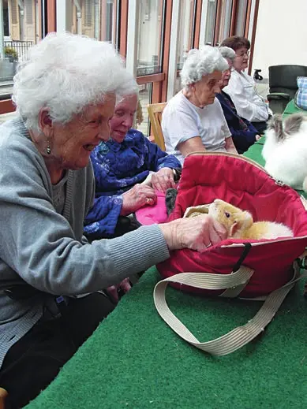
InterviewFondation Beau-Site – Accompagner la personne âgée en continuum
Interview de Pierre Rochat, Directeur de la Fondation Beau-Site
Departement Chemie Universität Basel – Interview mit Prof. Dr. Marcel Mayor, Departementsleiter
Version française incluse : Département de chimie de l'Université de Bâle
Inselspital Universitätsklinik für Hals-, Nasen- und Ohrenkrankheiten, Kopf- und Halschirurgie
Kompetente medizinische Versorgung im gesamten Hals-, Nasen- und Ohrenbereich – Interview mit Prof. Dr. med. Marco Domenico Caversaccio (version française incluse)
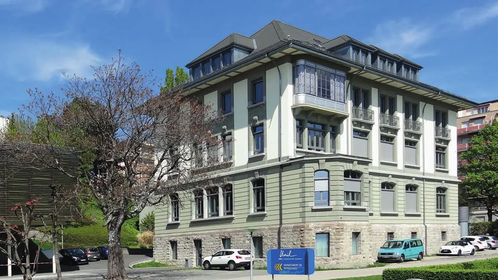
PublireportageUn centre consacré à l'étude du métabolisme
Département de physiologie de l'Université de Lausanne (version anglaise incluse)
Hôpitaux universitaires de Genève – HUG – Département de santé mentale et psychiatrie
Interview du Professeur Jean-Michel Aubry, Chef du Département (version allemande incluse)
 Interview
InterviewL'Ensemble Hospitalier de la Côte – Un réseau de soins intégrés avant l'heure
Entretien avec le Directeur général de l'EHC, M. François Jacot-Descombes
 Interview
InterviewH-Net AG – Interview mit Michael Ziegler, Geschäftsleiter
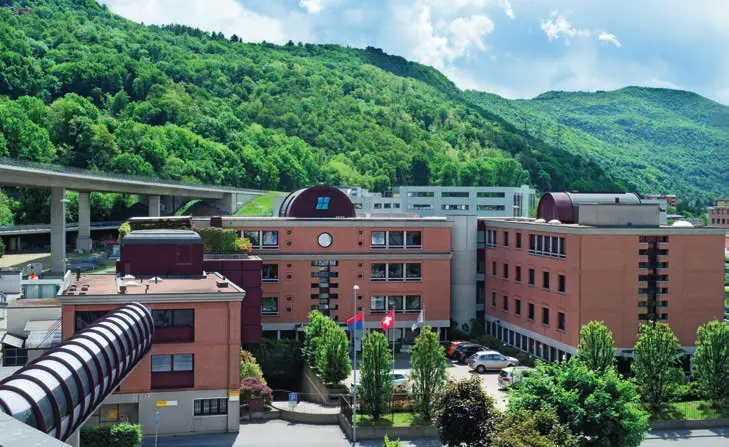
InterviewHelsinn: Building Quality Cancer Care Together
Interview with CEO Riccardo Braglia (version italienne incluse)
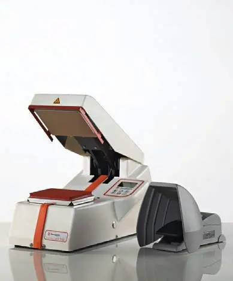
PublireportageJ.P. Müller AG – Tradition und Kompetenz
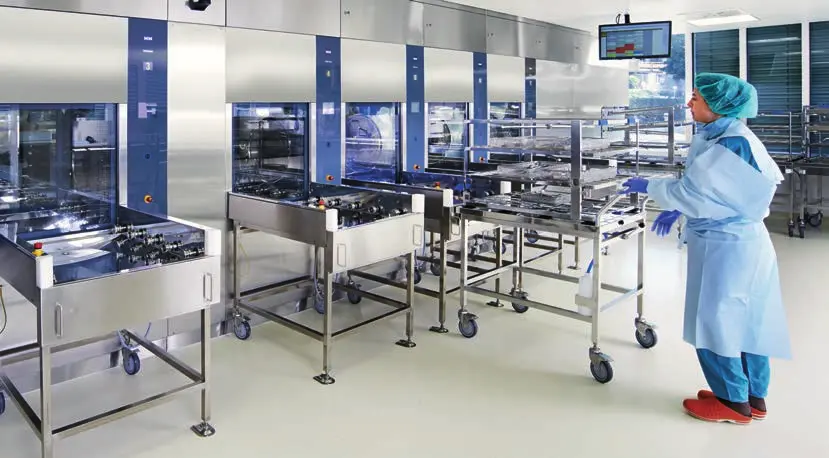
PublireportageMMM Sterilisatoren AG – Die Garantie für perfekt sterilisierte medizinische Instrumente
Version française incluse : La garantie d'instruments médicaux parfaitement stérilisés
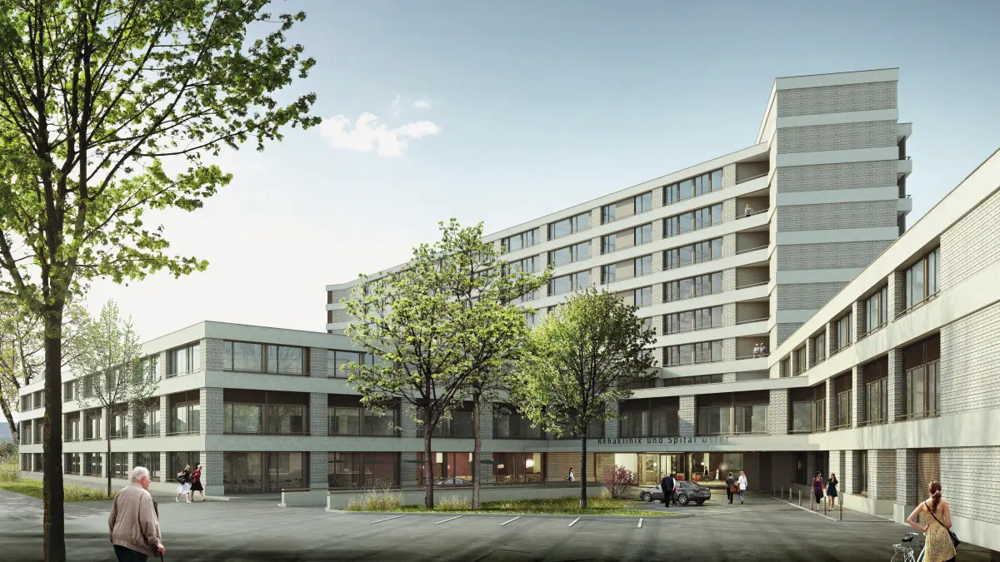
Interview« Die Entwicklung der Tarifsysteme beeinflusst das Ertragspotenzial »
Interview mit Andreas Mühlemann, Direktor Spital Uster
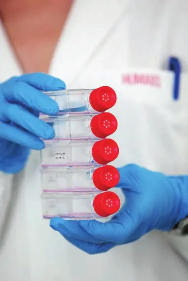
PublireportageHumabs BioMed SA – A cure for serious infections developed from former sufferers
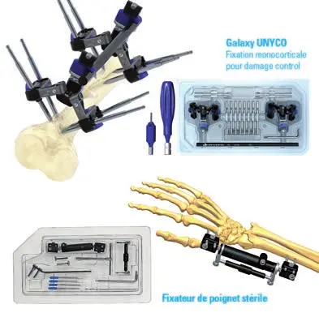
PublireportageMedeco-ch – Le goût de la performance
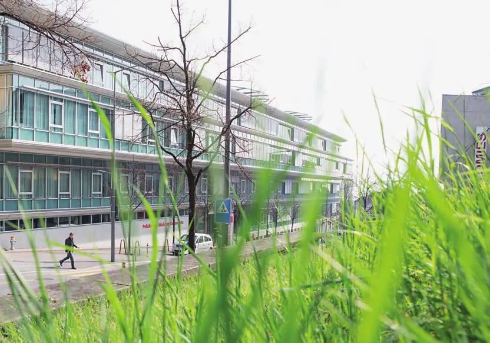
PublireportagePoliclinique médicale universitaire Lausanne – Soins de qualité et création de connaissances
Sinomedica, la cultura curativa millenaria cinese e il rigore scientifico occidentale
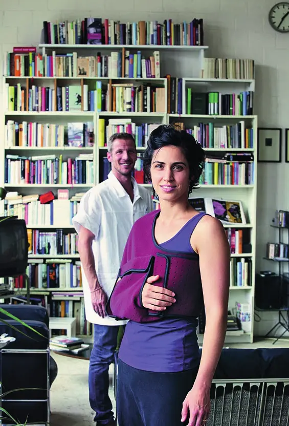
InterviewSpitex Zürich Limmat – Im Gespräch mit CEO Christina Brunnschweiler
Entreprises de ce numéro · 36
ARODEMS – Association romande et tessinoise des directeurs d'établissements médico-sociaux
Association professionnelle des directeurs d'EMS

Bundesamt für Gesundheit (BAG)
Administration fédérale de la santé publique
Cardiocentro Ticino
Centre de cardiologie et chirurgie cardiaque
Centrale d'achats des établissements sanitaires société coopérative (CADES)
Centrale d'achats et logistique pour établissements de santé
Centre hospitalier universitaire vaudois (CHUV)
Hôpital universitaire
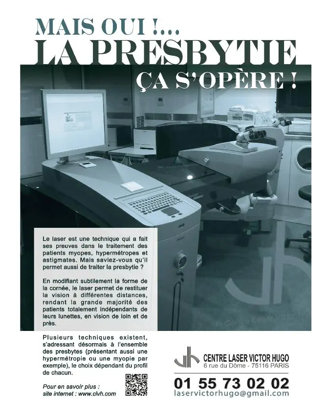
Centre Laser Victor Hugo
Non précisé
Cité générations – maison de santé
Centre médical pluridisciplinaire
Cosanum AG
Logistique de santé
CPMA SA – Centre de Procréation Médicalement Assistée
Procréation médicalement assistée et endocrinologie gynécologique
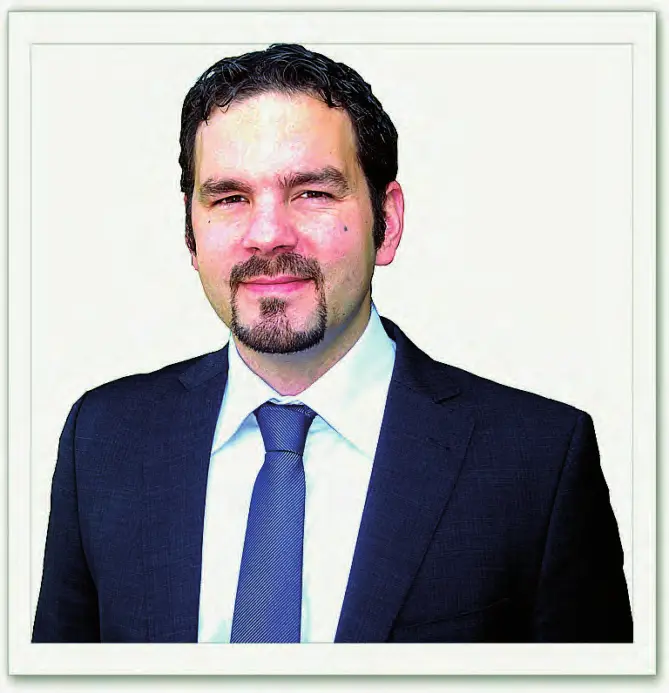
Curmed AG
Distribution d'implants orthopédiques
Departement Chemie Universität Basel
Département universitaire de chimie
Département de physiologie – Université de Lausanne
Département universitaire de recherche en physiologie et métabolisme
Dipartimento della sanità e della socialità (Canton Ticino)
Administration cantonale de la santé et des affaires sociales

Ensemble Hospitalier de la Côte (EHC)
Hôpitaux et EMS
FASMED – Dachverband der Schweizerischen Handels- und Industrievereinigungen der Medizintechnik
Faîtière de la technique médicale
Fondation Beau-Site
Établissements médico-sociaux
H-Net AG
Logiciels eHealth et échange de données médicales
H+ Die Spitäler der Schweiz
Faîtière des hôpitaux, cliniques et institutions de soins
Helsinn Group
Groupe pharmaceutique – soins de support en oncologie

Hôpitaux universitaires de Genève – HUG
Hôpital universitaire
Humabs BioMed SA
Biotechnologie – anticorps thérapeutiques
Inselspital – Universitätsklinik für Hals-, Nasen- und Ohrenkrankheiten, Kopf- und Halschirurgie
Clinique universitaire ORL
J.P. Müller AG
Systèmes de marquage textile et techniques d'assemblage du bois
Kantonsspital Aarau (KSA)
Hôpital cantonal
Medeco-ch Sàrl
Distribution d'implants d'orthopédie et de traumatologie
MMM Sterilisatoren AG
Systèmes de stérilisation et de désinfection
Policlinique médicale universitaire Lausanne (PMU)
Médecine générale et communautaire universitaire
santésuisse
Faîtière des assureurs-maladie
Sinomedica SA
Centres médicaux d'acupuncture et de médecine traditionnelle chinoise
Spital Uster
Hôpital régional
Spitex Zürich Limmat
Aide et soins à domicile
Staatssekretariat für Bildung, Forschung und Innovation SBFI
Administration fédérale de la formation et de la recherche
Swiss Institute for Regenerative Medicine (SIRM)
Recherche en médecine régénérative
Swiss Stem Cell Bank SA (SSCB)
Biobanque de cellules souches
Universitätsspital Basel – Orthopädische Universitätsklinik
Hôpital universitaire – orthopédie et traumatologie
UniversitätsSpital Zürich (USZ)
Hôpital universitaire
Aucun résultat.